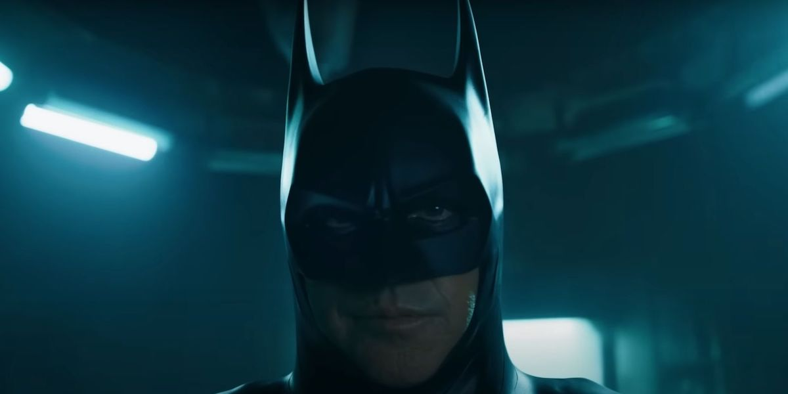
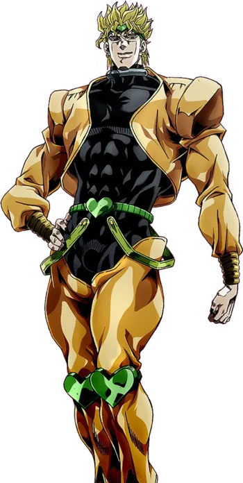

Uomo-Pistrelo è un film adattato ad fumetto comico e raffigura il nostro personaggio principale (L'uomo-pistrelo)
che deve picchiare i criminali utilizzando i suoi fortissimi possenti poteri. Seguitelo alle 13 al cinema (non so quale).
Personaggi Principali Del Film:
Uomo-Pistrelo

L'Uomo-Pistrelo(o anche chiamato batman dai fan) è il
personaggio principale della saga BatBoy. Esso è stato morso
da un pipistrelo e quindi ha ottenuto i suoi poteri.
ah e gli son morti i genitori... forse.
Il Joker

Il Joker è uno dei supercattivi se non il supercattivo
più importante della saga di BatBoy. Eterno rivale
dell'Uomo-Pistrelo e psicopatico professionale. E' anche un
pagliaccio e fa ridere gli orfani.
DIO Brando!

Dio Brando è il rivale principale del'Uomo-Pistrelo nella prima
stagione dove L'Uomo-Pistrelo viene attaccato da questo
vampiro. Riempito di odio giura vendetta contro L'Uomo-Pistrelo